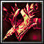

Crossbow of Requiem
[Bow]
+9400 Damage
+690 Main Stat
+15% Attack Speed
+4% Skill Damage
Passive: "Requiem" Activate one of 3 effects on every 14th attack (Blue Wraith heals you for 3000+1x Main Stat, Green wraith slows for 3 seconds and deals 12.5x Main Stat damage in an AoE, Red wraith deals 22.5x Main Stat in an AoE)
Obtain :
Drops from Blood Wrath with 7.5%